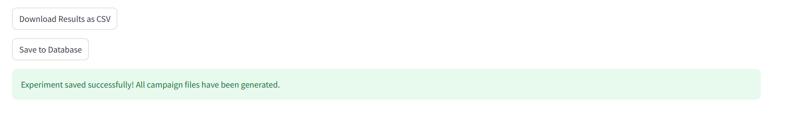

Single Objective Optimization Campaign — Case Study Tutorial
This tutorial walks you through a complete single objective optimization campaign step by step.
You will learn how to define variables, set up the optimization, enter experimental results, and interpret the outcome.
Goal of the Case Study
We will perform a reaction yield optimization — our goal is to maximize the reaction yield (%) by adjusting:
Temperature (°C)
Catalyst concentration
Pressure (bar)
Residence Time (min)
1. Define the Campaign

Enter a descriptive Experiment Name — e.g.
Optimization tutorial.Optionally, add Notes (e.g., “5 variables and 1 objective, using a synthetic funtion for the tutorial”).
The Experiment Date field fills automatically — you can edit it if needed.
Press Save Campaign to store the configuration.
2. Define and Edit Variables
Next, define the experimental variables that the optimizer can change.

For each variable:
Variable Type: Choose
Continuous(numeric range) orCategorical(discrete options).Variable Name: For example,
Temperature.Lower/Upper Bound: Define the allowed range (e.g., 30–120 °C).
Unit (optional): Add units like
°C,bar, ormin.
Click Add Variable to include it in your setup.
Edit Variables
If you make changes later, update them directly in the table and click Save Variable Changes.

Delete Variables
Select a variable from the dropdown menu, click Delete Variable, and then confirm with Save Variable Changes.


3. Experiment Setup
Define how the optimization will proceed.
Field |
Description |
|---|---|
Response to Optimize |
Select the measured value to optimize (e.g., |
Initial Experiments |
Number of points used for initialization (e.g., |
Total Iterations |
Total optimization rounds (e.g., |
Initialization Method |
How initial points are generated: |
Acquisition Function |
Strategy for choosing next experiments: |
Direction |
Choose Maximize or Minimize the response. |
4. Generate Initial Experiments
Click Suggest Initial Experiments.
The system generates a design table based on your variable ranges and initialization method.

Fill in your measured results (e.g., Yield) for each row.
Press Submit Initial Results when done.
5. Run the Optimization Loop
Once initial data is submitted, the optimizer proposes the Next Experiment Suggestion — the next best parameter combination to test.

Perform the experiment with the suggested parameters.
Enter the measured value (e.g.,
Yield = 41.08) in the Result for Yield field.Press Submit Result.
The system automatically updates the model and suggests the next point.
Repeat until all iterations are completed.
6. Monitor Optimization Progress
During or after the optimization, you can visualize how the process evolves.
Parallel Coordinates Plot
Shows all tested experiments and how each variable affects the yield.

Each line = one experiment
Color = Yield value
Patterns indicate which variables most influence the result.
Optimization Progress Chart
Displays selected variable progress versus experiment number.

This chart helps you track whether the optimization is converging toward higher yields.
7. Optimization Completed
When all iterations are done, you’ll see a summary table with all tested conditions.

Exporting Data
Download Results as CSV – Save all data locally.
Save to Database – Store results for future campaigns.

8. Resume or Reuse Campaigns
You can reuse or continue previous campaigns.

Resume from Previous Manual Campaign: Continue an interrupted run.
Reuse Previous Campaign as Seeds: Start a new campaign using previous results as training data.
9. Edit and Reuse Previous Experiments
If you want to adjust or reselect previous results:

Check or uncheck experiments you want to include.
Click Use Selected Experiments.
Optionally, enable “Skip additional random initial points†to start optimization immediately from the existing dataset.
10. Results and Best Conditions
Once finished, the optimizer reports the best-performing conditions based on your objective (e.g., maximum yield).
You can:
Review all results in the table
Export as CSV
Save to the database for later use or reporting
Add new suggestions if you are not satisfied
Summary of the Case Study
Step |
Description |
Key Action |
|---|---|---|
1 |
Define campaign |
Set experiment name and notes |
2 |
Add variables |
Define parameter ranges |
3 |
Configure setup |
Select response, iterations, and acquisition |
4 |
Generate initial experiments |
Create starting dataset |
5 |
Enter data |
Input measured yield |
6 |
Get next suggestion |
Run next experiment |
7 |
Monitor progress |
Check charts and convergence |
8 |
Save results |
Export CSV or database |
9 |
Reuse or modify campaign |
Resume or retrain optimizer |